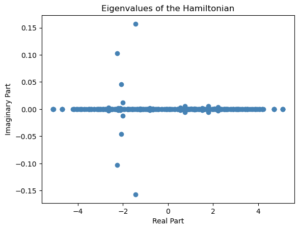
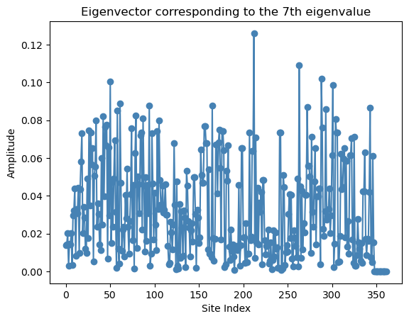
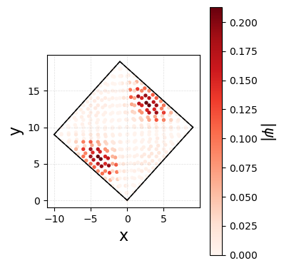

Designing Custom Hoppings
In the previous section we defined custom layer geometries. The layer tells MoirePy where the atoms sit; the hopping parameters tell it how strongly they couple. By default you pass a constant float and every bond of that type gets the same amplitude. In this section we replace those constants with callables so the coupling varies bond-by-bond, driven by the actual distance between atoms.
1. The Six Hopping Slots
generate_hamiltonian accepts six parameters:
| Parameter | Description |
|---|---|
tll |
Intra-layer hopping inside the lower layer |
tuu |
Intra-layer hopping inside the upper layer |
tlu |
Inter-layer hopping from lower to upper |
tul |
Inter-layer hopping from upper to lower |
tlself |
On-site energy for atoms in the lower layer |
tuself |
On-site energy for atoms in the upper layer |
Each slot accepts either:
- A float or int: every bond of that type gets the same constant amplitude.
- Or a callable (a function for example): MoirePy calls it once per hopping channel and expects an array back.
You can freely mix: pass a float for tll and a function for tul. All six slots follow the same rule and default to zero (0) if not specified.
2. Function Signatures
The signature differs slightly depending on whether the parameter is a pair-hopping term (tll, tuu, tlu, tul) or an on-site term (tlself, tuself).
Pair-hopping (tll, tuu, tlu, tul)
def my_hopping(pos_i, pos_j, R, type_i, type_j, lattice, **kwargs):
...
return values
| Argument | Type | Description |
|---|---|---|
pos_i |
ndarray (N, 2) |
Coordinates of the source atoms |
pos_j |
ndarray (N, 2) |
Coordinates of the destination atoms. In case of PBC, this is the mapped coordinate of the atom inside the supercell. |
R |
ndarray (N, 2) |
Supercell shift vectors for the point j. Add this to pos_j to get the actual coordinate of the atom. |
type_i |
list[str] of length N |
Atom-type labels of source atoms (e.g. "A", "B") |
type_j |
list[str] of length N |
Atom-type labels of destination atoms |
lattice |
BilayerMoireLattice |
The full lattice object; has theta, mlv1, mlv2, etc. |
**kwargs |
any | Anything you pass via extra_inputs |
N is the total number of bonds of that hopping type in the supercell.
Note
The shape of the returned value should be (N, k, k) where k is the number of orbitals per atom. For single-orbital (k=1) systems (N,) shape doesn't raise error.
On-site (tlself, tuself)
def my_onsite(pos_i, type_i, lattice, **kwargs):
...
return values
R is absent here because on-site terms do not hop anywhere.
Note
This example only uses pos_i and pos_j to compute bond length. The remaining arguments are there when you need them: type_i/type_j lets you distinguish A->B from A->A bonds; R gives the periodic image offset of each hop; lattice exposes lattice.theta, lattice.mlv1, and the rest of the geometry.
3. The Hopping Model
We use a Gaussian decay for the inter-layer hopping:
- \(t_0\) is the maximum hopping amplitude at zero separation.
- \(r_c\) is the decay length. Bonds much longer than \(r_c\) contribute almost nothing.
Orbital overlap decays rapidly with distance, and the Gaussian captures that behavior with just two parameters. We keep tll and tuu as plain floats (constant nearest-neighbour hopping within each layer) and put the Gaussian only on tul and tlu, which control the inter-layer coupling.
4. Setup
import numpy as np
import matplotlib.pyplot as plt
from moirepy import BilayerMoireLattice, SquareLayer
ll1, ll2, ul1, ul2 = 2, 3, 3, 2
lattice = BilayerMoireLattice(
SquareLayer, ll1, ll2, ul1, ul2,
n1=1, n2=1, pbc=True,
)
lattice.generate_connections(inter_layer_radius=3.0)
# Output:
# twist angle = 0.3948 rad (22.6199 deg)
# 13 cells in upper lattice
# 13 cells in lower lattice
Warning
Set inter_layer_radius comfortably above your largest r_c. Here r_c stays at or below 1.0 while the radius is 3.0, so every bond that matters falls within the search radius, and the Gaussian handles the suppression of distant ones.
5. Defining the Custom Function
def gaussian_inter(pos_i, pos_j, R, type_i, type_j, lattice, t0, rc):
"""Gaussian-decay inter-layer hopping."""
# R maps pos_j to its true physical coordinate inside the supercell
r = np.linalg.norm(pos_i - (pos_j + R), axis=1)
return t0 * np.exp(-(r / rc) ** 2)
pos_i - (pos_j + R) has shape (N, 2), so np.linalg.norm(..., axis=1) gives a length-N array of distances, one per bond. The function returns a length-N array, exactly what MoirePy expects.
6. Building the Hamiltonian
Pass t0 and rc through extra_inputs. Every key there becomes a keyword argument to your callable.
INTRA_T = -1.0 # constant nearest-neighbour hopping within each layer
T0 = 0.5 # inter-layer amplitude at r=0
RC = 1.0 # Gaussian decay length
ham = lattice.generate_hamiltonian(
tll=INTRA_T, # float: same hop for every intra-lower bond
tuu=INTRA_T, # float: same hop for every intra-upper bond
tul=gaussian_inter, # callable
tlu=gaussian_inter, # callable (tlu = tul dagger for a Hermitian system)
tlself=0.0, # float: zero on-site energy
tuself=0.0, # float: zero on-site energy
extra_inputs={"t0": T0, "rc": RC},
).toarray()
print(f"Hamiltonian shape: {ham.shape}")
# Output:
# Hamiltonian shape: (26, 26)
Hermiticity
MoirePy does not enforce tlu = tul* automatically. For a physical Hermitian system, make sure your tlu callable returns the complex conjugate of what tul returns, or pass the same real-valued function for both as we do here.
7. Exploring Hopping: Study of Non-Hermitian Systems
Non-Hermitian systems are unique because they break one of the fundamental postulates of quantum mechanics—that all operators are Hermitian, which ensures real spectra. These systems exhibit a rich variety of phenomena and have been the subject of extensive research in recent years. In this section, we will illustrate one quick example how to construct a Non-Hermitian Hamiltonian using MoirePy.
## Designing custom lattice with open boundary conditions to show the effect of non-Hermiticity
params = {
"latticetype": SquareLayer,
"ll1": 9, "ll2": 10, "ul1": 10, "ul2": 9,
"n1": 1, "n2": 1
}
# 1. Open Boundary Conditions
lattice_obc = BilayerMoireLattice(**params, pbc=False)
lattice_obc.generate_connections(inter_layer_radius=1)
llat = np.array([[1, 0], [0, 1]]) # square lattice vectors for the lower layer
ulat = llat
# Output:
# twist angle = 0.1052 rad (6.0256 deg)
# 181 cells in upper lattice
# 181 cells in lower lattice
### custom hooping function for styding the Non Hermitian effects
def tuudd(this_coo, neigh_coo, llat, ulat, this_type, neigh_type):
gamma = 0.3 # anisotropy parameter
t0 = 1 # hopping parameter
theta = np.rad2deg(np.arctan2(neigh_coo[1] - this_coo[1], neigh_coo[0] - this_coo[0]))
return t0 + np.cos(np.deg2rad(theta)) * gamma
## this cosine term introduces anisotropy in the hopping based on the angle between the two sites
### lets contrcuct the hamiltonian with this new hopping function
ham = lattice_obc.generate_hamiltonian(
tll=tuudd, # float: same hop for every intra-lower bond
tuu=tuudd, # float: same hop for every intra-upper bond
tul=2, # callable
tlu=1, # callable
tlself=0.0, # float: zero on-site energy
tuself=0.0, # float: zero on-site energy
).toarray()
## Chk if the Ham is Hermitian
print("Is the Hamiltonian Hermitian?", np.allclose(ham, ham.conj().T))
# Output:
# Is the Hamiltonian Hermitian? False
##plot the eigenvalues
e, v = np.linalg.eig(ham)
plt.plot(e.real, e.imag, 'o', color='steelblue')
plt.xlabel('Real Part')
plt.ylabel('Imaginary Part')
plt.title('Eigenvalues of the Hamiltonian')
# Output:
# Text(0.5, 1.0, 'Eigenvalues of the Hamiltonian')

## plot one eigenvector
plt.figure()
plt.plot(np.abs(v[6]), 'o-', color='steelblue')
plt.xlabel('Site Index')
plt.ylabel('Amplitude')
plt.title('Eigenvector corresponding to the 7th eigenvalue')
plt.show()

## Lets plot the |eigenvectors| (amplitude of a given state) of the Hamiltonian for a specific eigenvalue----
N = lattice_obc.lower_lattice.points.shape[0]
R = 6
plt.figure(figsize=(4, 4))
nx = lattice_obc.n1
ny = lattice_obc.n2
mlv1 = lattice_obc.mlv1
mlv2 = lattice_obc.mlv2
# Draw large unit cell
plt.plot([0, nx*mlv1[0]], [0, nx*mlv1[1]], 'k', linewidth=1)
plt.plot([0, ny*mlv2[0]], [0, ny*mlv2[1]], 'k', linewidth=1)
plt.plot([nx*mlv1[0], nx*mlv1[0] + ny*mlv2[0]],
[nx*mlv1[1], nx*mlv1[1] + ny*mlv2[1]], 'k', linewidth=1)
plt.plot([ny*mlv2[0], nx*mlv1[0] + ny*mlv2[0]],
[ny*mlv2[1], nx*mlv1[1] + ny*mlv2[1]], 'k', linewidth=1)
# Draw base unit cell
plt.plot([0, mlv1[0]], [0, mlv1[1]], 'k--', linewidth=1)
plt.plot([0, mlv2[0]], [0, mlv2[1]], 'k--', linewidth=1)
plt.plot([mlv1[0], mlv1[0] + mlv2[0]],
[mlv1[1], mlv1[1] + mlv2[1]], 'k--', linewidth=1)
plt.plot([mlv2[0], mlv1[0] + mlv2[0]],
[mlv2[1], mlv1[1] + mlv2[1]], 'k--', linewidth=1)
# Plot upper and lower lattice points
sc1 = plt.scatter(lattice_obc.upper_lattice.points[:, 0],
lattice_obc.upper_lattice.points[:, 1],
c=np.abs(v[:N, R]), cmap='Reds', s=8, label='Upper')
sc2 = plt.scatter(lattice_obc.lower_lattice.points[:, 0],
lattice_obc.lower_lattice.points[:, 1],
c=np.abs(v[N:, R]), cmap='Reds', s=8, label='Lower')
plt.gca().set_aspect('equal', adjustable='box')
# Colorbar
cbar = plt.colorbar(sc2)
cbar.set_label(r'$|\psi|$', rotation=270, labelpad=20, fontsize=15)
# Axis labels
plt.xlabel('x', fontsize=16)
plt.ylabel('y', fontsize=16)
# Clean grid and layout
plt.grid(True, linestyle='--', linewidth=0.5, alpha=0.4)
plt.tight_layout()
plt.show()

In the eigenstate, we can see the pile up of the state (known as Non-Hermitian Skin effect). This example illustartes that you can use MoirePy to make a non-hermitian system and analyze such system. The more about this can be found here.
8. Moiré System with Multiple Orbitals
We have explored so many phenomena with single orbital. Now, we will illustrate the Hamiltonian construction with multiple orbitals.
from moirepy import BilayerMoireLattice, TriangularLayer
lattice = BilayerMoireLattice(
latticetype=TriangularLayer,
ll1=1, ll2=2,
ul1=2, ul2=1,
n1=1, n2=1,
k = 2,
pbc=True # for k-space
)
# Output:
# twist angle = 0.3803 rad (21.7868 deg)
# 7 cells in upper lattice
# 7 cells in lower lattice
lattice.generate_connections(inter_layer_radius=1)
real_ham = lattice.generate_hamiltonian(
tll=[[1, 0], [0, 1]], tuu=1.2,
tul=1, tlu=1,
tuself=0.2, tlself=0.2
).toarray().real ## How to set the multij orbital index for the hoppings?
print(f"Hamiltonian shape: {real_ham}")
# Output:
# Hamiltonian shape: [[0.2 0.2 2. 2. 2. 2. 2. 2. 2. 2. 2. 2. 2. 2. 1. 1. 1. 1.
# 1. 1. 0. 0. 0. 0. 0. 0. 1. 1. ]
# [0.2 0.2 2. 2. 2. 2. 2. 2. 2. 2. 2. 2. 2. 2. 1. 1. 1. 1.
# 1. 1. 0. 0. 0. 0. 0. 0. 1. 1. ]
# [2. 2. 0.2 0.2 2. 2. 2. 2. 2. 2. 2. 2. 2. 2. 1. 1. 0. 0.
# 1. 1. 1. 1. 0. 0. 1. 1. 0. 0. ]
# [2. 2. 0.2 0.2 2. 2. 2. 2. 2. 2. 2. 2. 2. 2. 1. 1. 0. 0.
# 1. 1. 1. 1. 0. 0. 1. 1. 0. 0. ]
# [2. 2. 2. 2. 0.2 0.2 2. 2. 2. 2. 2. 2. 2. 2. 0. 0. 0. 0.
# 0. 0. 1. 1. 1. 1. 0. 0. 1. 1. ]
# [2. 2. 2. 2. 0.2 0.2 2. 2. 2. 2. 2. 2. 2. 2. 0. 0. 0. 0.
# 0. 0. 1. 1. 1. 1. 0. 0. 1. 1. ]
# [2. 2. 2. 2. 2. 2. 0.2 0.2 2. 2. 2. 2. 2. 2. 1. 1. 1. 1.
# 1. 1. 1. 1. 0. 0. 0. 0. 1. 1. ]
# [2. 2. 2. 2. 2. 2. 0.2 0.2 2. 2. 2. 2. 2. 2. 1. 1. 1. 1.
# 1. 1. 1. 1. 0. 0. 0. 0. 1. 1. ]
# [2. 2. 2. 2. 2. 2. 2. 2. 0.2 0.2 2. 2. 2. 2. 1. 1. 1. 1.
# 0. 0. 1. 1. 1. 1. 0. 0. 0. 0. ]
# [2. 2. 2. 2. 2. 2. 2. 2. 0.2 0.2 2. 2. 2. 2. 1. 1. 1. 1.
# 0. 0. 1. 1. 1. 1. 0. 0. 0. 0. ]
# [2. 2. 2. 2. 2. 2. 2. 2. 2. 2. 0.2 0.2 2. 2. 0. 0. 0. 0.
# 1. 1. 0. 0. 1. 1. 1. 1. 0. 0. ]
# [2. 2. 2. 2. 2. 2. 2. 2. 2. 2. 0.2 0.2 2. 2. 0. 0. 0. 0.
# 1. 1. 0. 0. 1. 1. 1. 1. 0. 0. ]
# [2. 2. 2. 2. 2. 2. 2. 2. 2. 2. 2. 2. 0.2 0.2 0. 0. 1. 1.
# 0. 0. 0. 0. 0. 0. 1. 1. 1. 1. ]
# [2. 2. 2. 2. 2. 2. 2. 2. 2. 2. 2. 2. 0.2 0.2 0. 0. 1. 1.
# 0. 0. 0. 0. 0. 0. 1. 1. 1. 1. ]
# [1. 1. 1. 1. 0. 0. 1. 1. 1. 1. 0. 0. 0. 0. 0.1 0.1 1.2 1.2
# 1.2 1.2 1.2 1.2 1.2 1.2 1.2 1.2 1.2 1.2]
# [1. 1. 1. 1. 0. 0. 1. 1. 1. 1. 0. 0. 0. 0. 0.1 0.1 1.2 1.2
# 1.2 1.2 1.2 1.2 1.2 1.2 1.2 1.2 1.2 1.2]
# [1. 1. 0. 0. 0. 0. 1. 1. 1. 1. 0. 0. 1. 1. 1.2 1.2 0.1 0.1
# 1.2 1.2 1.2 1.2 1.2 1.2 1.2 1.2 1.2 1.2]
# [1. 1. 0. 0. 0. 0. 1. 1. 1. 1. 0. 0. 1. 1. 1.2 1.2 0.1 0.1
# 1.2 1.2 1.2 1.2 1.2 1.2 1.2 1.2 1.2 1.2]
# [1. 1. 1. 1. 0. 0. 1. 1. 0. 0. 1. 1. 0. 0. 1.2 1.2 1.2 1.2
# 0.1 0.1 1.2 1.2 1.2 1.2 1.2 1.2 1.2 1.2]
# [1. 1. 1. 1. 0. 0. 1. 1. 0. 0. 1. 1. 0. 0. 1.2 1.2 1.2 1.2
# 0.1 0.1 1.2 1.2 1.2 1.2 1.2 1.2 1.2 1.2]
# [0. 0. 1. 1. 1. 1. 1. 1. 1. 1. 0. 0. 0. 0. 1.2 1.2 1.2 1.2
# 1.2 1.2 0.1 0.1 1.2 1.2 1.2 1.2 1.2 1.2]
# [0. 0. 1. 1. 1. 1. 1. 1. 1. 1. 0. 0. 0. 0. 1.2 1.2 1.2 1.2
# 1.2 1.2 0.1 0.1 1.2 1.2 1.2 1.2 1.2 1.2]
# [0. 0. 0. 0. 1. 1. 0. 0. 1. 1. 1. 1. 0. 0. 1.2 1.2 1.2 1.2
# 1.2 1.2 1.2 1.2 0.1 0.1 1.2 1.2 1.2 1.2]
# [0. 0. 0. 0. 1. 1. 0. 0. 1. 1. 1. 1. 0. 0. 1.2 1.2 1.2 1.2
# 1.2 1.2 1.2 1.2 0.1 0.1 1.2 1.2 1.2 1.2]
# [0. 0. 1. 1. 0. 0. 0. 0. 0. 0. 1. 1. 1. 1. 1.2 1.2 1.2 1.2
# 1.2 1.2 1.2 1.2 1.2 1.2 0.1 0.1 1.2 1.2]
# [0. 0. 1. 1. 0. 0. 0. 0. 0. 0. 1. 1. 1. 1. 1.2 1.2 1.2 1.2
# 1.2 1.2 1.2 1.2 1.2 1.2 0.1 0.1 1.2 1.2]
# [1. 1. 0. 0. 1. 1. 1. 1. 0. 0. 0. 0. 1. 1. 1.2 1.2 1.2 1.2
# 1.2 1.2 1.2 1.2 1.2 1.2 1.2 1.2 0.1 0.1]
# [1. 1. 0. 0. 1. 1. 1. 1. 0. 0. 0. 0. 1. 1. 1.2 1.2 1.2 1.2
# 1.2 1.2 1.2 1.2 1.2 1.2 1.2 1.2 0.1 0.1]]
Summary
- All six hopping slots accept a float, int, or any callable; you can mix and match freely.
- Pair-hopping callables receive
(pos_i, pos_j, R, type_i, type_j, lattice, **kwargs); on-site callables receive(pos_i, type_i, lattice, **kwargs). - Pass extra parameters to your callable via the
extra_inputsdict. - Set
inter_layer_radiuslarger than your largestr_c; let the hopping function handle suppression. - For a Hermitian system, ensure
tluis the complex conjugate oftul.
Next Steps
- K-Space and Band Structures: Fold this Hamiltonian into momentum space and compute a band structure.
- OBC vs PBC: See how boundary conditions change the spectrum.
- Tutorials and Replicated Papers: See full physical results with realistic hop models.